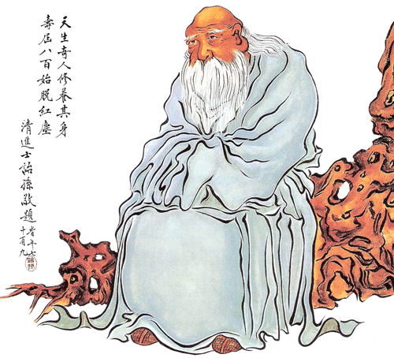
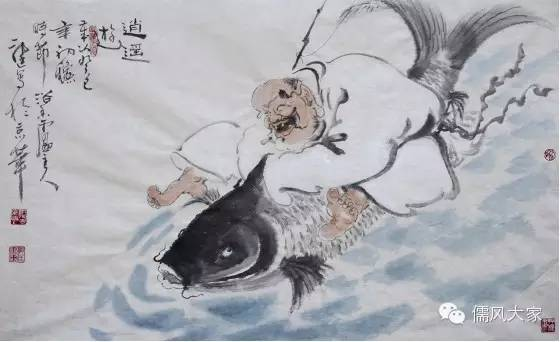

每天打开朋友圈， 看到各种鸡汤，我就想起彭祖, 因为彭祖是第一个做鸡汤的人。
彭祖因为鸡汤而闻名， 而彭祖的故事又被做成各种鸡汤贩卖， 千百年来经久不衰。
相传彭祖因烹饪鸡汤，献于帝尧，而受封于大彭氏国。这个故事在很多典籍中都有记载， 给人的印象彭祖是用请客送礼， 贿赂领导的手段得到封赏的。 这完全是误解。《史记》 记载，彭祖是帝高阳的玄孙，黄帝的八世孙，是正宗的帝王之后。 相反尧帝本人倒是出身草根， 从彭祖的族兄弟那里篡夺的帝位。 彭祖不但根正苗红，而且德高望重，得到先秦的大Ｖ们的一直好评， 孔子老师就盛赞彭祖”政之教大夫，官之教士，技之教庶人，扬则抑，抑则扬，缀以德行，不任以言。”， 让他自愧不如， 可见彭祖当官，靠的是贵族身份， 良好的德行和政绩。

彭祖长寿，人尽皆知。列子最早透露了彭祖的年龄：“彭祖之智不出尧舜之上，而寿八百，颜渊之才不出众人之下，而寿四八". 列子不愧是一位伟大的学者，他似乎预见了后世的某些科学家会以古代的年比现代短而质疑彭祖的寿命，因而把颜渊放在一起作为参照，你总不能说颜渊才活了几岁吧。
最早将彭祖的长寿作成鸡汤的是庄子，《庄子·刻意》有：“吹响呼吸，吐故纳新，熊经鸟申，为寿而已矣。此追引之士，养形之人，彭祖寿考者之所好也，若夫不刻意而高，无仁义而修，无功名而治，无江海而闲，不适引而寿，无不忘也，无不有也，澹然无极，而众美从之。此天地之道，圣人之德也". 庄子在这里对那些修炼气功以求长寿的方法并不十分赞赏，指出澹然无极，无求而寿才是正道。这是经典的庄氏鸡汤，天然清淡，不加任何人工佐料和添加剂。

但庄子的学生们就开始添油加醋了，东晋道士葛洪《神仙传》就杜撰了商王问道，采女双修的八卦故事，此后道家弟子更把彭祖包装成房中术，炼丹术的祖师，打着他老人家的旗号招摇撞骗，贩卖所谓长生不老的假药。
彭祖长寿，颜渊薄命。彭祖一生高官厚禄，吃遍美味佳肴，享尽人间富贵，寿高八百。那么，他幸福吗？彭祖很低调的回答：“仆遗腹而生，三岁失母，遇犬戎之乱，流离西域，百有余年，加以少怙，丧四十九妻，失五十四子，数遭忧患，和气折伤，令肌肤不泽，荣卫焦枯，恐不得度世。所闻素又浅薄，不足宣传”.
反观正能量的先进典型颜渊同学，“一箪食，一瓢饮, 在陋巷”，吃的是地沟油，住的是平民窟，一生穷困潦倒，中年早逝。 但孔子说他很幸福，“人不堪其忧，回也不改其乐”. 那他的幸福从何而来？当然是因为老师的鸡汤做的好。